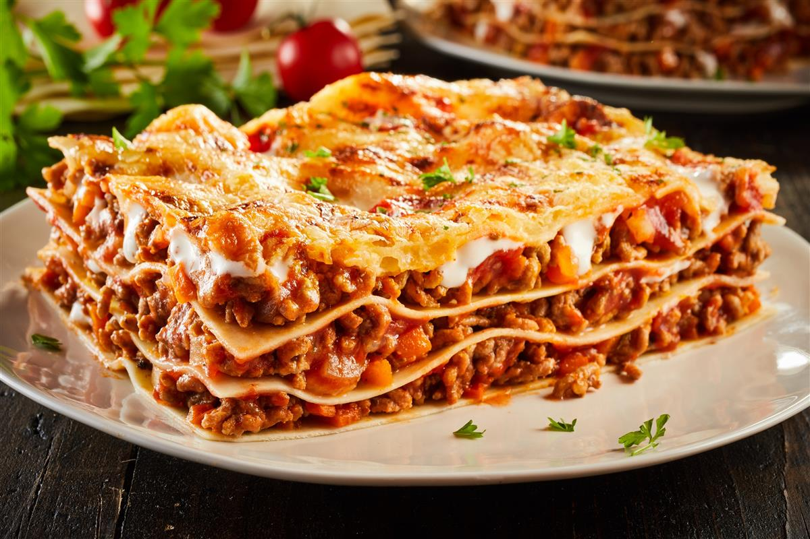

Lazanje

Sastojci
- Mljeveno meso
- Pasirana rajčica
- Kapula
- Ulje
- Začini
- Kore za lazanje
- Bešamel
- Sir ki voli, i parmezan za na kraju
Postupak
- Zafrižiti kapulu na ulju
- Dodati meso i pržiti dok ne pusti vodu i postane zrnato
- Dodati pasirane rajčice i zeru vodije
- Začiniti po želji
- Kore staviti u mloku vodu da omekšaju
- Složiti kore na dno posude ili duboke loštijere
- Politi bešamelun i dodati sloj šuga
- Staviti sir ako volite
- Složiti kore za sljedeći sloj
- Slogati do vrha ili dok se ne potroši šug, odnosno kore
- Staviti peći u zagrijoni šaher na 180
- Ka je gotovo, posuti parmezanun i pustiti da malo ohlodi
- Uslast